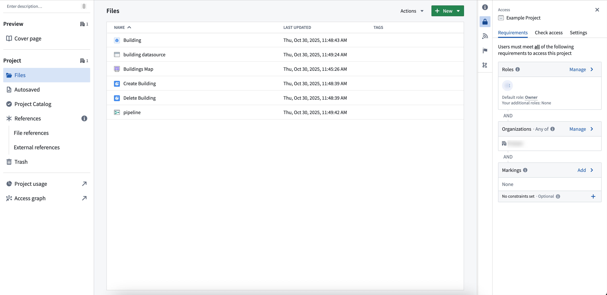
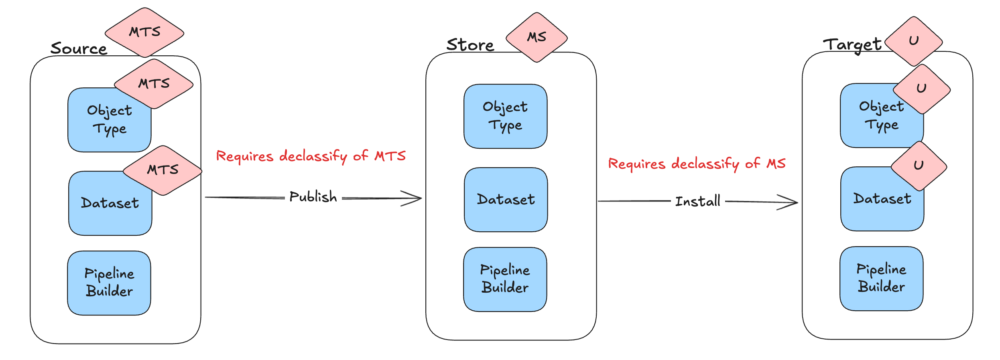

The permissions to view, edit, and manage ontology resources are managed through Compass, the Palantir platform's filesystem. Ontology resources are saved into a project, and the selected project determines who can view, edit, and manage them.
This capability is enabled for new ontologies. For existing ontologies, an ontology owner must enable the capability manually, and existing ontology resources require migration. This capability is not yet available for Default Ontologies. If you are unsure of your ontology type, contact Palantir Support.
This project-based permissions approach replaces the previous permission models: ontology roles and datasource-derived permissions. It comes with multiple benefits:
Migrating to projects does not change who has access to the backing datasource. For datasource-backed object types, users continue to need permissions on both the object type and the datasource to see objects.
:::callout{theme="neutral"} Object types without backing datasources must be saved in projects and use project-based permissions. They also require an object security policy to determine who can view their objects. :::
Consider an object type called Building saved as a file in project A. Your ability to view, edit, or manage Building depends on your role in project A. If you are an Editor in project A, you can edit the Building object type. To view specific Building objects (like Empire State Building), you need the Viewer role on the object type and either access to the backing datasource or access granted through object and property security policies, depending on how the object type's security is configured.

If you only have viewing rights for the object type, you can only see information such as schema and contact information, not the actual data. If you need help understanding the permissions required, review the Compass project side panel.
Object types are permissioned differently from objects. To see an object type, you must have View permissions on the object type, but do not need View permissions for the backing datasource.
To see objects, you must hold View permissions on the object type and access to the data. Access to the underlying data is determined by the object type's security configuration:
For more information on configuring object security, review the documentation on managing object security. For more information on the distinction between object types (schema) and objects (data), review the documentation on object permissions.
For a datasource-backed object type in a project, the backing datasource must be imported into the project for the object to index. If the backing datasource is not already in the project, you are prompted to import it during object creation.
You will need the appropriate edit permissions depending on the resource you would like to edit:
A Marketplace product installs using the same permission model it was packaged with. The Require new ontology resources be saved in a project toggle in Ontology configuration only affects creation of new ontology resources â it does not change how Marketplace installs a product on the target environment (where the product is installed) relative to the source environment (where it was packaged).
When ontology resources are saved in projects governed by classification-based access controls (CBAC), the following rules apply:
File classifications are not ontology-specific â they apply to all files. The rules below are called out here because they affect how project permissioning interacts with classification-based access controls. Marketplace does not carry file classifications inside the product itself.

Previously, permissioning ontology resources varied based on your ontology authorization model. The table below summarizes how resources are currently managed for each model. Refer to the documentation to learn more about these legacy permission systems.
| Legacy Ontology permission models | Description |
|---|---|
| Ontology roles | - Ontology resources are permissioned in Ontology Manager using ontology specific roles (Ontology viewer, Ontology editor, and Ontology owner). They are not a resource of a project. |
| Datasource-derived | - Ontology resources derive their permissions from the backing datasource of the object. For example, you have editor on the object type if and only if you are editor on the backing datasource. |